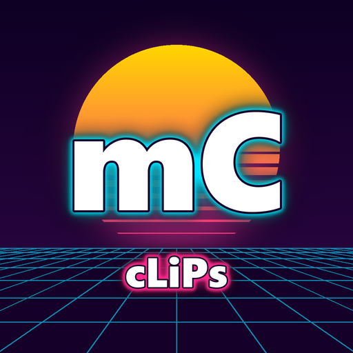

Short GTA clips, with the streamer's name on every one
mAgNiFiCeNt_cLiPs is a fan channel. We post funny GTA moments from streamers who allow clipping, and from our own gameplay. Every clip is watched and approved by a person before it goes up.
Where to watch
- TikTok@magnificent_clips0
- YouTube Shorts@magnificent_clips
- Instagram Reels@magnificent_clips
- X@magnif_clips
We also post Reels on our Facebook Page, Magnificentclips.
What we post
Streamer moments
Clips of streamers who said yes when we asked, or who run a clipping program that invites clips. The streamer's name is on screen and their channel is linked in the post.
Our own gameplay
Moments from our own GTA sessions, recorded on our own console.
Vertical and subtitled
Each clip is cut to under a minute, turned upright for phones and given subtitles so it works with the sound off.
clipfarm, the program behind the channel
clipfarm is the program we wrote to make and upload these clips. It runs on our own computer and is connected only to our own accounts. It is not offered to the public and has no sign-up.
- TikTok: clipfarm sends a finished clip to our own TikTok account's inbox as a draft. We open the draft in the TikTok app and post it by hand.
- YouTube, Instagram and Facebook: clipfarm uploads the clips we approved to our own channel, account and Page.
- Nothing else: it does not read messages, collect data about viewers or show ads.
How a clip is made, step by step
Are you a streamer in one of our clips?
Message us on TikTok or YouTube and the clip comes down the same day we read it. More for streamers.
Questions
- Do you clip anyone you like?
- No. A streamer's clip is posted only when we have their yes on record, or when they run a clipping program whose rules allow it.
- Is a computer choosing and posting the clips by itself?
- No. Software finds moments and drafts the captions, some of them with an AI writing tool. A person watches each clip and decides whether it is posted.
- Can I use clipfarm with my account?
- No. It works only with the channel owner's own accounts.
- Are you part of Rockstar Games or TikTok?
- No. This is a fan channel.